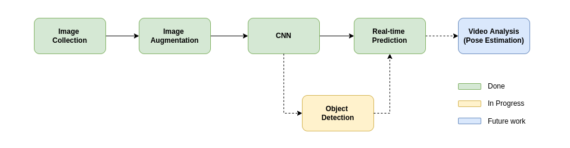

Machine Learning for Classifying Baseball Grips

Process
This project can be broken down into three steps:
- Data Collection & Augmentation
- Training the Model
- Prediction in Real-Time

Data Collection & Augmentation
Without a readily available, open-source solution, I generated a dataset of thousands of baseball grip images from a small subset of source images using data augmentation techniques such as transposition, rotation, and scaling. This allowed me to create a synthetic dataset large enough to train a CNN to classify pitches based on grip of the ball.
Training the Model
Training a convolutional neural network on my synthetic dataset resulted in ~99% accuracy when tested on data that was generated in a similar manner to the process above. That said, when tested in real life, the model demonstrated ~87% accuracy. Since most of the data collected was my own hand, I expected some overfitting to be present. I plan to address this moving forward by diversifying my dataset.
Prediction in Real-Time
This step can be seen in the video above. The classifier trained in the previous step is running on real-time video data. Frames are classified based on the grip a user offers to the camera, then an averaging algorithm displays the result on screen in blue text.
Next Steps
The ultimate goal of this project is to provide pitchers feedback on how well they are disguising their pitches. In the short-term, I will implement an object detection algorithm I developed for still images on the same video stream you see here. After that, I plan to generate an additional data set with actual pitches from a hitter's perspective. With this, I plan to add pitching mechanics (via pose estimation) to the model.
For more details, please visit my Github repository.
CNN for Pitch Classification
- MSR: Winter Project
- March 2022
Overview
A baseball pitcher places high importance on being able to deceive a hitter.
The interplay between pitcher and hitter is not unlike that of two chess
opponents. As such, if a hitter can detect patterns in a pitcher's behavior
that tip off what pitch is being thrown, the chances of success (getting a hit)
are much higher.
With this in mind, this project is the preliminary step in assessing a pitcher's
ability to disguise pitches. Using a convolutional
neural network (CNN), baseball grips are classified with their corresponding
pitch in real-time: fastball, curveball, or changeup. Combined with pose
estimation, this will serve as a foundation for future development on pitch
prediction in real-time.
Source Code